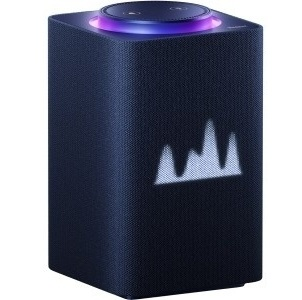
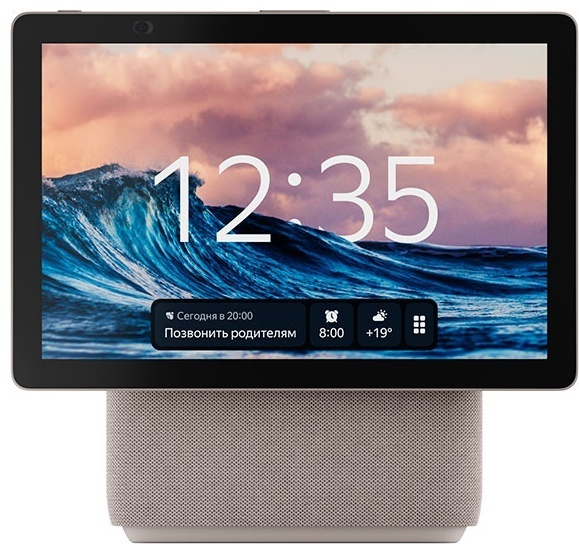
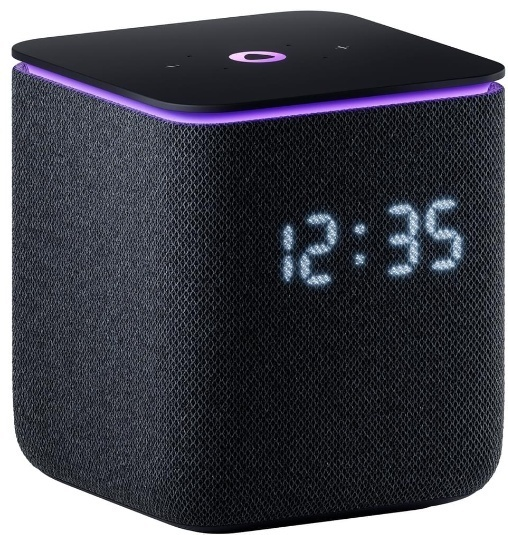
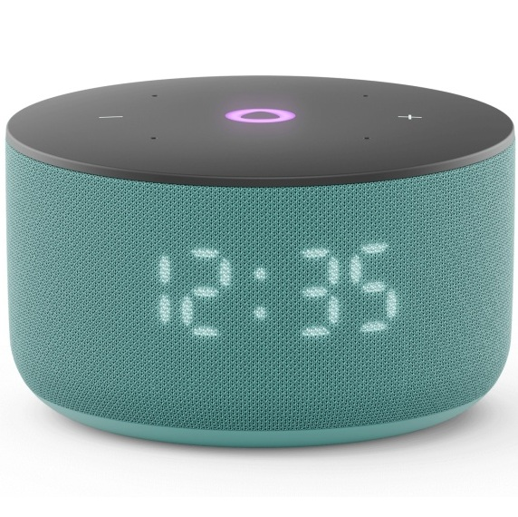
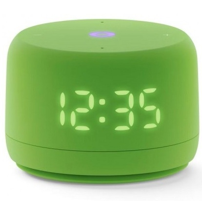

Яндекс
Датчики
Розетки
Выключатели
Яндекс станция Макс
Яндекс станция Дуо Макс
Яндекс станция Миди
Яндекс станция Мини 3 Про
Яндекс станция Мини 3
Яндекс станция Лайт 2
Яндекс ТВ про 140см
Яндекс ТВ 165см
Пульт ДУ Яндекс YNDX-0006
Яндекс центр управления YNDX-00510

Умная колонка Яндекс.Станция Макс заключена в корпус из пластика, обтянутого тканью. На лицевой стороне расположен монохромный LED-дисплей, который отображает дату, погоду, выводит анимацию голосового помощника. Световое кольцо на верхней панели показывает состояние станции сменой цветов, миганием, вращением, мерцанием, пульсацией. По бокам колонки находятся 5 динамиков и 7 микрофонов. Трехполосная акустическая система воспроизводит низкие, средние и высокие частоты из разных динамиков.
С Алисой можно разговаривать, задавать вопросы, простить найти музыку, видео, информацию в интернете. Помощник помогает решать прикладные задачи — устанавливать будильник, включать/переключать треки в музыкальном плеере, вызвать такси, заказать еду.
Разъем Ethernet позволяет подключать колонку к проводной локальной сети для доступа к интернету со скоростью до 1 Гбит/с. Переключение с беспроводного соединения Wi-Fi на проводное происходит автоматически. В комплект входит пульт со встроенным микрофоном. Несколько колонок и станций можно объединить в мультирум для передачи музыки, звуков в любую точку дома.
Поддерживает беспроводные технологии Wi-Fi, Zigbee и Bluetooth.
Стоимость 280000 тг

Станция Дуо Макс выполнена в бежевом корпусе из пластика и ткани. Она оснащена контурной LED-подсветкой. Одна из особенностей модели – поворотный сенсорный экран FullHD для просмотра мультимедиа, ответов Алисы и управления устройствами умного дома. Камера 13 Мп с углом обзора 120° позволяет общаться по видеосвязи.
Акустическая система с 4 широкополосными динамиками и сабвуфером мощностью 60 Вт воспроизводит сбалансированный звук. Яндекс.Станция Дуо Макс YNDX-00055BIE поддерживает беспроводные технологии Wi-Fi, Zigbee и Bluetooth. С помощью Алисы можно включать музыку, слушать сказки, заказывать продукты, вызывать такси, ставить будильник.
Стоимость 350000 тг

Яндекс Станция Миди — новая умная колонка с виртуальным ассистентом Алисой. Мощное звучание 24 Вт в таком компактном корпусе. LED-дисплей, который показывает время, погоду и реакции Алисы, а также активная контурная LED-подсветка. Встроенный хаб управления Zigbee и голосовое управление умным домом даже без интернета. Беспроводная связь Wi-Fi (2,4–5 ГГц) и Bluetooth 5.0, с возможностью встраивания в экосистему умного дома. Активная контурная LED-подсветка и анимированные реакции на дисплее добавляют эмоций, когда слушаете музыку и общаетесь с Алисой. LED-дисплей показывает время и температуру. В режиме радионяни Алиса может передавать вам звуки из детской на телефон или вторую Яндекс Станцию.
Стоимость 126000 тг

В отличие от предыдущих моделей, она оснащена встроенными модулями Zigbee, Wi-Fi и Matter over Wi-Fi, что позволяет ей управлять устройствами умного дома даже без подключения к интернету, если те поддерживают такие же протоколы. Внутри компактного корпуса скрывается 18-ваттный динамик и два пассивных излучателя, усиливающих басы. Звучание стало заметно богаче и глубже по сравнению с «Станцией Мини 3» — вы почувствуете это сразу после первого запуска.
«Станция Мини 3 Про» работает с голосовым помощником Алиса, который поможет включить музыку, узнать погоду, управлять техникой, создать напоминание или даже рассказать сказку. Её приятно поставить и на полку, и на кухню — она выглядит современно и лаконично.
Стоимость 112 000 тг

Умная колонка Яндекс.Станция Мини 3 представлена в круглом сером корпусе с отделкой из акустической ткани. Голосовой ассистент Алиса с YandexGPT точно распознает команды, анализирует сложные запросы, делит их на несколько простых и превращает в цепочку действий. Колонка Яндекс.Станция Мини 3 синхронизируется с другими умными устройствами в приложении Дом с Алисой и управляет ими с помощью голосовых команд.
Стоимость 70000 тг

Каждый может заглянуть в глазки Алисе. Она подмигнёт в ответ на комплимент, зажмурится от восторга или опустит взгляд, когда загрустит. А если произнести особые команды, то можно активировать секретные реакции Алисы.
Новый корпус Станции Лайт 2 и динамик мощностью 6 Вт позволили увеличить её акустический объём, чтобы любимые треки звучали ещё чище и насыщеннее.
Когда захотите свериться с часами или узнать прогноз погоды, Алиса не только озвучит ответ, но и покажет время и температуру на LED-экране.
Стоимость 49000 тг

Функция «Найди пульт». Может работать как Станция, даже с выключенным экраном. Физическое отключение микрофона. 4 высокочувствительных микрофона + 1 в пульте. Можно объединять с устройствами умного дома и управлять ими голосом. Подключение через Wi-Fi.
Стоимость 560000 тг

- ✅ Разрешение 4K UHD — наслаждайтесь четкостью и яркостью изображения.
- 🔒 Акустическая система Dolby Audio — погружение в объемный звук.
- 🌐 Поддержка Smart TV — доступ к любимым приложениям и контенту.
- 📺 Угол обзора 178° — отличное качество изображения с любого ракурса.
- 🔌 Множество входов — HDMI, USB, Ethernet и Bluetooth для подключения различных устройств.
Стоимость 708400 тг

Автоматизировать бытовую технику при помощи умного пульта Yandex SmartControl YNDX-0006 проще, чем может показаться. С его помощью можно управлять техникой, например телевизором или кондиционером, а также любым другим устройством, которое поддерживает ИК-соединение. Также осуществляется передача данных посредством технологии Wi-Fi. Используя модель, можно не только включать/выключать технику, но и настраивать её.
Стоимость 9800 тг

Универсальный Хаб Яндекса для простого и быстрого подключения разных приборов к умному дому с Алисой. И единая точка управления всеми устройствами.
С Хабом умный дом сможет больше. Наполните его датчиками и множеством других Zigbee-устройств. Хаб соединит их с Яндекс Станцией, и вы будете управлять умным домом через приложение или голосом.
Подключайте датчики Яндекса с Zigbee к Хабу напрямую, объединяйте с другими устройствами умного дома и задавайте сценарии. Множество процессов станут автоматизированными.
По Wi-Fi Хаб соединяется с лампочками, чайниками, пылесосами и тысячами других девайсов разных производителей.
А ещё Хаб – это смарт-пульт, действующий на 360°. Даже если у вас дома простой телевизор или кондиционер, соедините их с Хабом при помощи ИК-подключения и управляйте без пульта.
Стоимость 28000 тг
Разные датчики
Умные розетки
Сенсорные выключатели